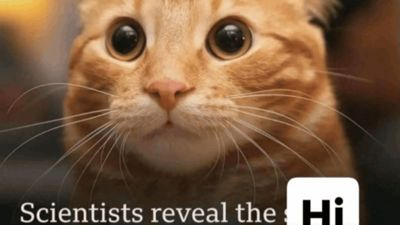

TOP 10 MEMES THIS MONTH
-

Rank 1. AI Black Cat Slowly Claps with Human Hands
A green-screen meme built on an AI-generated video of a black cat with human hands and a human smile, slowly clapping.
Posted by @merkurianin on Instagram. © its owner; shown in small form for ranking and commentary.
Sources & details
Seen on TikTok, Instagram, YouTube, and Know Your Meme. First seen online .
TikTok @asian5767 6.5M views / 651.5K likes (observed 2026-11-09); Instagram @merkurianin 3M likes (observed 2026-11-04); YouTube YouTube 30.2K views (observed 2026-11-04); Know Your Meme 27,773 page views (no separate observation time on file).
Know Your Meme explainerTikTok / @asian5767 (6.5M views)Instagram / @merkurianin (3M likes)YouTube (30.2K views)
-

Rank 2. 'While They Are Out Partying...' -- 35M Views
A TikTok caption format: someone shows off an oddly specific, mostly useless skill, like wrapping a burger at top speed or tossing trash bags without…
Posted by @bellaa.1e on TikTok. © its owner; shown in small form for ranking and commentary.
Sources & details
Seen on TikTok, Instagram, YouTube, and Know Your Meme. First seen online .
TikTok @ryu_da_sigma 53.3M views / 6.6M likes (observed 2026-11-09); Instagram @wallys_smash_burgers 205K likes (observed 2026-11-09); YouTube Lessons in Meme Culture 477K views (observed 2026-11-04); Know Your Meme 5,768 page views (no separate observation time on file).
Know Your Meme explainerTikTok / @ryu_da_sigma (53.3M views)Instagram / @wallys_smash_burgers (205K likes)YouTube / Lessons in Meme Culture (477K views)
-

Rank 3. 'Malfoid': Female Draco Malfoy Art Takes Over -- October Meme of the Month
"Malfoid" is a fan-art trend that draws Harry Potter's Draco Malfoy as a woman, usually a smug rival teasing Harry.
Posted by @redteneri on X. © its owner; shown in small form for ranking and commentary.
Sources & details
Seen on TikTok, YouTube, and Know Your Meme. First seen online .
TikTok 89K likes; YouTube Papallax 887.1K views (observed 2026-11-04); Know Your Meme 189,648 page views (no separate observation time on file).
Know Your Meme explainerKYM: October 2026 Meme of the Month winnerTikTok / @80saerobicz (2K views)YouTube / Papallax (887.1K views)
-

Rank 4. H3's Ethan Klein Cheating Allegations Spawn a Meme Factory, Per KYM
A wave of reaction memes about H3 Podcast co-host Ethan Klein after his wife, Hila Klein, publicly accused him of having an affair.
Posted by @kleinhila on Instagram. © its owner; shown in small form for ranking and commentary.
Sources & details
Seen on X, TikTok, Instagram, YouTube, and Know Your Meme. First seen online .
X @PopBase 2.2M views / 43.1K likes (observed 2026-11-09); TikTok @gmcnews 595.4K views / 46.7K likes (observed 2026-11-09); Instagram @kleinhila 322K likes (observed 2026-11-09); YouTube Scroll Deep 358.8K views (observed 2026-11-04); Know Your Meme 20,945 page views (no separate observation time on file).
Know Your Meme explainerX / @PopBase (2.2M views)KYM: KleinificationTikTok / @gmcnews (595.4K views)Instagram / @kleinhila (322K likes)YouTube / Scroll Deep (358.8K views)
-

Rank 5. Anakin Skywalker Becomes the Face of Gen Z Male Rage
Star Wars prequel memes that cast Anakin Skywalker as a stand-in for frustrated young men.
Posted by @ArchitectOracle on X. © its owner; shown in small form for ranking and commentary.
Sources & details
Seen on X, TikTok, YouTube, and Know Your Meme. First seen online .
X 475K views; YouTube Akkad Daily 633.3K views (observed 2026-11-08); Know Your Meme 28,677 page views (no separate observation time on file).
Know Your Meme explainerX News (Malfoid and Anakin)YouTube / Akkad Daily (633.3K views)
-

Rank 6. 'I'm So Sorry' TikTok Slideshow Trend -- 25.6M Views
A TikTok slideshow format: the first slide shows a flattering photo the poster says is them, each next slide peels back an edit to reveal the less glamorous…
Posted by @theywanthunter on TikTok. © its owner; shown in small form for ranking and commentary.
Sources & details
Seen on TikTok, YouTube, and Know Your Meme. First seen online .
TikTok 25.6M views; YouTube RICHLEV 505.3K views (observed 2026-11-04); Know Your Meme 7,104 page views (no separate observation time on file).
Know Your Meme explainerTikTok / @kamdan.13 (604K views)YouTube / RICHLEV (505.3K views)
-

Rank 7. Macaulay Culkin Goes as the 'Thousand-yard Stare' Meme for Halloween
The Thousand-Yard Stare is a blank, shell-shocked gaze that says "I have seen too much," used after anything exhausting, from finals week to a chaotic group…
Posted by @DiscussingFilm on X. © its owner; shown in small form for ranking and commentary.
Sources & details
Seen on X and Know Your Meme. First seen online .
X @DiscussingFilm 17.1M views / 351K likes (observed 2026-11-09); Know Your Meme 121,377 page views (no separate observation time on file).
-

Rank 8. 'Code Rot' / 'Yep It's Code Rotted Indeed': Glitch Filter Meme Spreads on TikTok
A TikTok scare-format around the 'Despicable Me 4 – Correct' filter game.
Posted by @tr0v0n on TikTok. © its owner; shown in small form for ranking and commentary.
Sources & details
Seen on TikTok, YouTube, and Know Your Meme. First seen online .
TikTok @tr0v0n 1.5M views / 105.1K likes (observed 2026-11-09); YouTube Lessons in Meme Culture 946.4K views (observed 2026-11-05); Know Your Meme 18,565 page views (no separate observation time on file).
Know Your Meme explainerTikTok / @tr0v0n (1.5M views)TikTok / @penutisthebestnickname (1.3M views)TikTok / @ted.broome1 (1.3M views)YouTube / Lessons in Meme Culture (946.4K views)
-

Rank 9. AI Rumpelstiltskin 'Tip Toein' in My Jordans'
An AI-generated clip, made to look like a 1980s fantasy film, of Rumpelstiltskin dancing in a barn, set to Riff Raff's song "TIP TOE WING IN MY JAWWDINZ."…
Posted by @6aimbot9 on TikTok. © its owner; shown in small form for ranking and commentary.
Sources & details
Seen on X, TikTok, and Know Your Meme. First seen online .
TikTok 9.8M views; Know Your Meme 69,215 page views (no separate observation time on file).
Know Your Meme explainerTikTok / @pfuzzypiffdoozy (6.1M views)
-

Rank 10. 'Scientists Reveal the Hi': Exploitable Image-macro Format
An exploitable image-macro that looks like a fake BBC-style news thumbnail.
Posted by @cheemsitz on Instagram. © its owner; shown in small form for ranking and commentary.
Sources & details
Seen on X, TikTok, Instagram, and Know Your Meme. First seen online .
TikTok @._bella_141 217.5K views / 48.4K likes (observed 2026-11-09); Instagram @cheemsitz 103K likes (observed 2026-11-09); Know Your Meme 52,720 page views (no separate observation time on file).
Know Your Meme explainerTikTok / @._bella_141 (217.5K views)Instagram / @cheemsitz (103K likes)